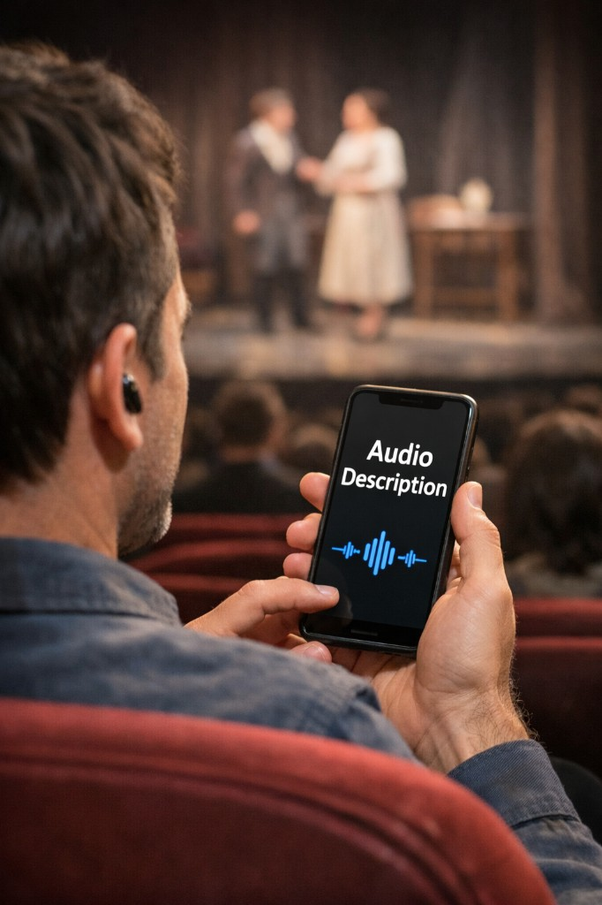

Subtítulos
Mensajes OSC y página web para mostrar texto en tiempo real, con estilos y órdenes avanzadas.
Accesible es una app para macOS pensada para espectáculos accesibles. Trabaja junto a QLab (Figure 53) y ofrece servidores de subtítulos, traducción, audiodescripción y videodescripción en red local.
El enlace a la tienda se actualizará cuando la app esté publicada.
Mensajes OSC y página web para mostrar texto en tiempo real, con estilos y órdenes avanzadas.
Mismo flujo que subtítulos; traducción al idioma de salida elegido y visualización en otro puerto.

Reproducción de audio pregrabado desde las carpetas del proyecto, controlado por OSC.
Streaming de vídeo MP4, sincronización y controles OSC para el cliente en el navegador.
Puedes elegir la carpeta de tu proyecto QLab o gestionar proyectos en una ubicación base. La app mantiene una estructura clara para medios y configuración.